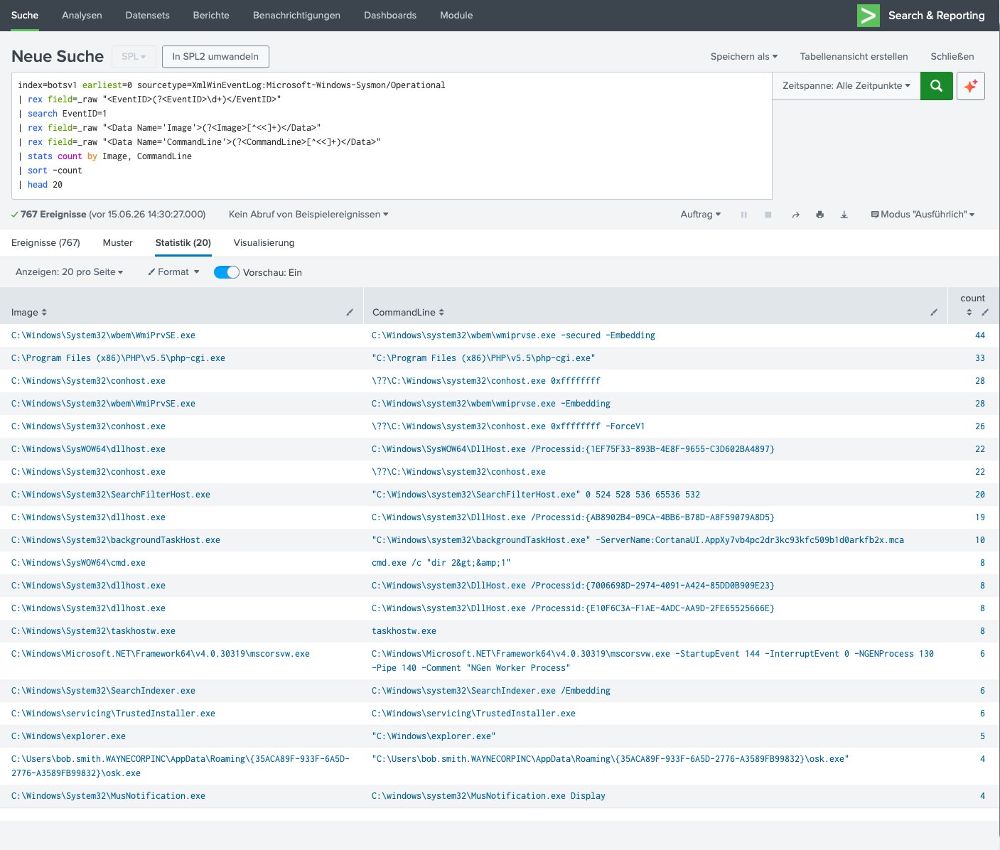

Kontext
In der vorherigen SMB-Analyse haben wir gesehen, dass die Cerber-Ransomware
über SMB von 192.168.250.100 zu 192.168.250.20 verbreitet wurde.
Die nächste Frage: Welche Prozesse wurden auf dem Zielhost ausgeführt?
Was ist Sysmon EventID 1?
Sysmon (System Monitor) ist ein Microsoft-Tool, das detaillierte Informationen über Systemaktivitäten protokolliert. EventID 1 (ProcessCreate) wird ausgelöst, sobald ein neuer Prozess erstellt wird.
Sysmon EventID 1 erfasst:
- Image → Vollständiger Pfad der ausführbaren Datei (z.B.
C:\Windows\System32\cmd.exe) - CommandLine → Komplette Kommandozeile mit Argumenten
- User → Welcher Benutzer den Prozess gestartet hat
- ParentImage → Der Prozess, der diesen Prozess gestartet hat (Parent-Child-Beziehung)
- ParentCommandLine → Kommandozeile des Parent-Prozesses
- Hashes → SHA1, MD5, SHA256 und IMPHASH der Datei
- IntegrityLevel → Privilegien (Low, Medium, High, System)
- CurrentDirectory → Arbeitsverzeichnis beim Start
Warum ist Sysmon EventID 1 so wichtig? Jeder Malware-Ausführung beginnt mit der Erstellung eines Prozesses. Sysmon erfasst diesen Moment mit unerreichtem Detailgrad: nicht nur was ausgeführt wurde, sondern auch von wem, woher und mit welchem Hash.
Die Herausforderung: XML-Format
Der BOTS v1 Datensatz speichert Sysmon-Events im Windows-XML-Eventlog-Format.
Splunk extrahiert diese Felder nicht automatisch — wir müssen sie mit rex
(Regular Expressions) aus dem Rohdaten (_raw) parsen.
Erklärung der rex-Patterns:
rex field=_raw "<EventID>(?<EventID>\d+)</EventID>"→ Sucht im Rohdaten nach<EventID>123</EventID>und extrahiert die Zahlrex field=_raw "<Data Name='Image'>(?<Image>[^<]+)</Data>"→ Sucht nach<Data Name='Image'>C:\...</Data>und extrahiert den Pfad[^<]+→ Regex: "Ein oder mehrere Zeichen, die kein < sind" (alles bis zum schließenden Tag)
Die Ergebnisse
Die Analyse von 767 Sysmon Process Creation Events zeigt 20 unique Prozesse. Die meisten sind legitim — aber einer ist eindeutig schädlich.

Abb. 1 — Sysmon EventID 1: Top 20 Prozesse mit Image-Pfad und CommandLine
Top-Prozesse
| Image | CommandLine | Count | Bewertung |
|---|---|---|---|
| C:\Windows\System32\wbem\WmiPrvSE.exe | C:\Windows\system32\wbem\wmiprvse.exe -secured -Embedding | 44 | 🟢 Normal (WMI Provider) |
| C:\Program Files (x86)\PHP\v5.5\php-cgi.exe | "C:\Program Files (x86)\PHP\v5.5\php-cgi.exe" | 33 | 🟡 Web Server (PHP CGI) |
| C:\Windows\System32\conhost.exe | \??\C:\Windows\system32\conhost.exe 0xffffffff | 28 | 🟢 Normal (Console Host) |
| C:\Windows\SysWOW64\dllhost.exe | C:\Windows\SysWOW64\DllHost.exe /Processid:{...} | 22 | 🟢 Normal (COM Surrogate) |
| C:\Windows\SysWOW64\cmd.exe | cmd.exe /c "dir 2>&1" | 8 | 🟡 CMD-Output-Redirection |
| C:\Windows\explorer.exe | "C:\Windows\explorer.exe" | 5 | 🟢 Normal (Explorer) |
| C:\Users\bob.smith...\osk.exe | "C:\Users\bob.smith...\osk.exe" | 4 | 🔴 MASQUERADING! |
🔴 Critical Finding: Masquerading (osk.exe)
Masquerading ist eine Tarnungstechnik, bei der Malware einen harmlosen Systemprozessnamen verwendet, um Erkennung zu vermeiden.
Was wir hier sehen:
- Prozessname:
osk.exe(On-Screen Keyboard — Bildschirmtastatur) - Erwarteter Pfad:
C:\Windows\System32\osk.exe - Tatsächlicher Pfad:
C:\Users\bob.smith.WAYNECORPINC\AppData\Roaming\{35ACA89F-...}\osk.exe - Problem: Ein Systemprozess läuft aus dem Benutzer-Profil-Verzeichnis!
Masquerading erkannt: osk.exe (On-Screen Keyboard) ist ein legitimer
Windows-Prozess, der normalerweise in C:\Windows\System32\ liegt. Die Tatsache,
dass er hier aus C:\Users\...\AppData\Roaming\... ausgeführt wird, ist ein
eindeutiger Indikator für Malware. Der Angreifer hat den harmlosen Namen
gewählt, um beim schnellen Blick nicht aufzufallen.
Warum funktioniert Masquerading? Viele Endpoint-Protection-Tools vertrauen
auf Prozessnamen und Pfad-Whitelisten. Ein osk.exe aus dem System32-Verzeichnis
wäre vertrauenswürdig — aber das gleiche osk.exe aus einem Roaming-Profil ist es nicht.
Sysmon deckt diesen Unterschied auf.
🟡 Weitere Auffälligkeiten
PHP-CGI (php-cgi.exe)
C:\Program Files (x86)\PHP\v5.5\php-cgi.exe mit 33 Events deutet auf einen
PHP-Webserver hin. In einem Unternehmensnetzwerk ist das ungewöhnlich — PHP-CGI wird oft
für Webshells oder als Malware-Dropper verwendet.
CMD mit Output-Redirection
cmd.exe /c "dir 2>&1" — das 2>&1 leitet stderr nach stdout um.
Typisch für Skripte, die Kommando-Ausgaben in Dateien oder Pipes schreiben.
Kann legitim sein, aber in einem kompromittierten Kontext ist es verdächtig.
Defensive Maßnahmen
SPL-Queries
Fazit
Diese Sysmon-Analyse zeigt, wie Endpoint-Forensik im SOC funktioniert:
- XML-Parsing: Mit
rexkönnen wir aus Rohdaten strukturierte Felder extrahieren - Masquerading-Detection: Prozessnamen allein sind nicht aussagekräftig — der Pfad ist entscheidend
- Hash-Validierung: SHA1/MD5/SHA256 erlaubt die Identifikation bekannter Malware
- Parent-Child: Die Beziehung zwischen Prozessen zeigt die Attack-Kette
Der osk.exe-Masquerading-Fall ist ein perfektes Beispiel dafür, warum
Whitelisting nach Pfad und Hash wichtiger ist als reines Prozessname-Blocking.
Next Steps: WinRegistry-Analyse für Persistence-Mechanismen (Run-Keys, Scheduled Tasks) und File-Integrity-Monitoring mit Sysmon EventID 11 (FileCreate).